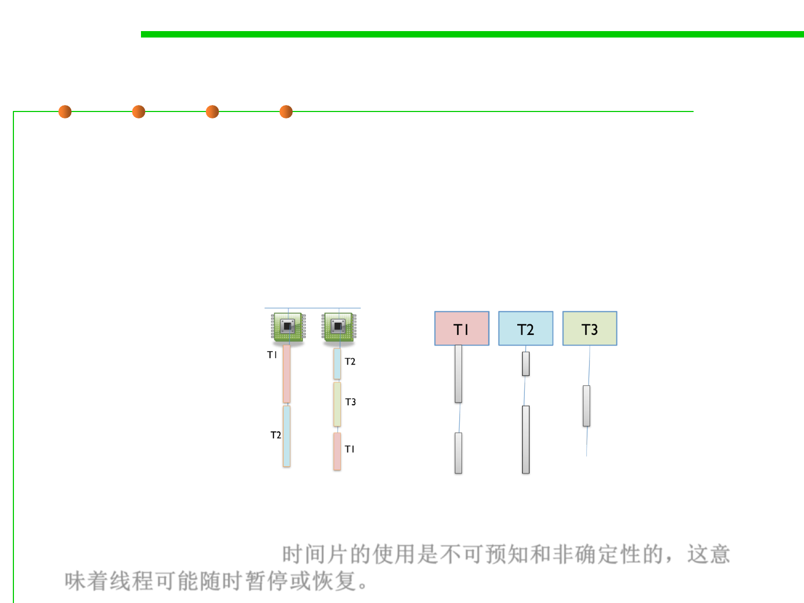

An example of time slicing
10.1 Concurrency and Thread-Safety
▪ Three threads T1, T2, and T3 might be time-sliced on a machine
that has two actual processors.
– At first one processor is running thread T1 and the other is running thread
T2, and then the second processor switches to run thread T3.
– Thread T2 simply pauses, until its next time slice on the same processor or
another processor.
▪ On most systems, time slicing happens unpredictably and
nondeterministically, meaning that a thread may be paused or
resumed at any time. 时间片的使用是不可预知和非确定性的，这意
味着线程可能随时暂停或恢复。